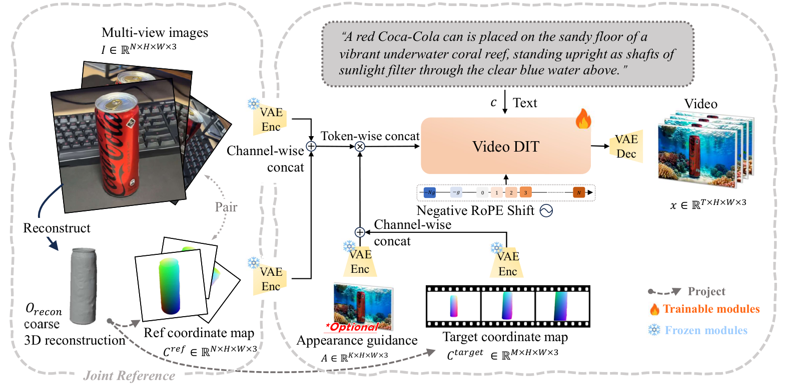
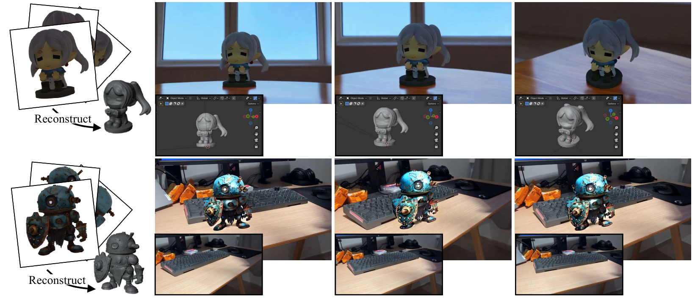

Appearance is hard to reconstruct
Feed-forward 3D reconstruction can recover geometry efficiently, but it still struggles to faithfully model complex surface appearance, materials, and relighting behavior.
Abstract
Reconstructing a renderable 3D model from images is a useful but challenging task. Recent feedforward 3D reconstruction methods have demonstrated remarkable success in efficiently recovering geometry, but still cannot accurately model the complex appearances of these 3D reconstructed models. Recent diffusion-based generative models can synthesize realistic images or videos of an object using reference images without explicitly modeling its appearance, which provides a promising direction for object rendering, but lacks accurate control over the viewpoints. In this paper, we propose GO-Renderer, a unified framework integrating the reconstructed 3D proxies to guide the video generative models to achieve high-quality object rendering on arbitrary viewpoints under arbitrary lighting conditions. Our method not only enjoys the accurate viewpoint control using the reconstructed 3D proxy but also enables high-quality rendering in different lighting environments using diffusion generative models without explicitly modeling complex materials and lighting. Extensive experiments demonstrate that GO-Renderer achieves state-of-the-art performance across the object rendering tasks, including synthesizing images on new viewpoints, rendering the objects in a novel lighting environment, and inserting an object into an existing video.
Motivation
Feed-forward 3D reconstruction can recover geometry efficiently, but it still struggles to faithfully model complex surface appearance, materials, and relighting behavior.
Reference-based video diffusion models can synthesize realistic content, but they often hallucinate unseen regions and cannot follow strict camera trajectories with strong multi-view consistency.
A coarse 3D proxy gives explicit structural guidance, while diffusion priors deliver realistic appearance and lighting without requiring full physical material recovery.
Pipeline
GO-Renderer first reconstructs a coarse 3D proxy, then renders object-centric coordinate maps for reference views and target trajectories. These maps become dense spatial conditions for the video diffusion model.

Our Results
Applications
According to the manuscript, GO-Renderer supports practical downstream usage such as Blender-integrated offline rendering and inserting rendered objects into real-world videos with plausible reflections and shadows.

Citation
@article{gu2026gorenderer,
title = {GO-Renderer: Generative Object Rendering with 3D-aware Controllable Video Diffusion Models},
author = {Gu, Zekai and Feng, Shuoxuan and Wang, Yansong and Huang, Hanzhuo and Du, Zhongshuo and Zhao, Chengfeng and Ren, Chengwei and Wang, Peng and Liu, Yuan},
year = {2026}
}